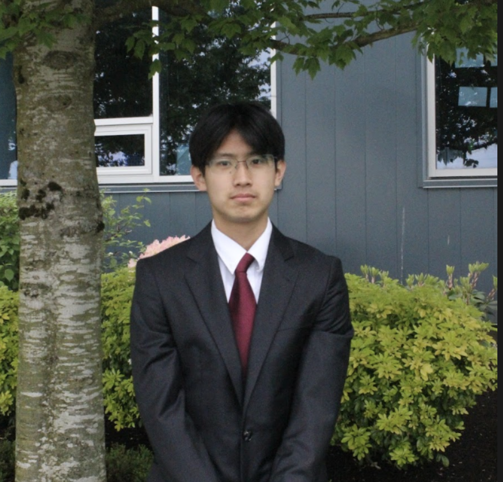

Our Team
Meet the SPAMUN Secretariat

Kaeli Sangha
Secretary General
Entering her final year at Southpointe Academy, Kaeli is honoured to serve you as the Secretariat general of SPAMUN 2025! Kaeli has been participating in MUN since Grade 9. Through each conference, Kaeli has grown in not only experience but confidence. In her very first conference, she discovered that she had a passion and a strong interest for public speaking especially when it concerns relevant topics that are happening in our world today. She enjoyed her past experiences staffing and on secretariats and is thrilled to step into this new leadership role. Outside of MUN, Kaeli can be found at the dance studio, baking a new dessert or busy reading a new book! With this year's iteration, Kaeli hopes that she can help delegates create a memorable experience.

Lucas Liu
Director General
As a senior at Southpointe Academy, Lucas is thrilled to serve as the Director General for SPAMUN 2025. Since stumbling through his first speech in the international energy agency at Cahsmun Horizons 2023, Lucas has grown a deep passion for discussing ongoing global issues through Model UN. He has enjoyed his experience both as a delegate, and staff, and is delighted to serve on the secretariat for this iteration of SPAMUN. Outside of MUN, Lucas can be found pouring hours into his VEX Robot, working on his 3D modeling skills, and biking around his neighborhood. He is eagerly looking forward to meeting all the delegates and having an exciting day filled with intense debate at SPAMUN 2025!

Aanam Gill
Chief of Staff
A senior at Southpointe Academy, Aanam is grateful to be serving as the Chief of Staff for SPAMUN 2025. Entering his first conference as a nervous delegate, Aanam has grown to love the constant debates and calculated problem-solving he has endured, continuing to participate in a variety of conferences. MUN has allowed Aanam to grow in multiple areas, like his public speaking that had improved significantly since his first conference. From his attendance, he eventually started staffing for day conferences such as SPAMUN 2024, continuing to grow his passion for the MUN community. Outside of fierce debating, Aanam can be seen binging shows, crafting stories, and creating a variety of short films. Aanam hopes to help in any way to ensure delegates and staff have a wonderful experience in SPAMUN 2025.

Sukhmeet Dubb
USG of Committees
Heading into her junior year at Southpointe Academy, Sukhmeet holds an immense passion for the Model United Nations world and a strong interest in current global events. She is honored to serve as the USG of Committees for SPAMUN 2025, having the simple goal of ensuring every delegate leaves SPAMUN with a truly rewarding experience. From the initial spark of raising her placard at SPAMUN to the engaging processes of creating speeches while creating blocs and writing resolution papers, Sukhmeet has embraced every aspect of Model United Nations, even including the sometimes stressful crisis committees. Like many delegates, she enjoys the Starbucks runs in the middle of committee breaks and the valuable opportunity to connect with new people. Outside of MUN, Sukhmeet can often be found rewatching TV shows many times and indulging in her love for baking.

Isabella Ng
USG of Media
Isabella is a Grade student at Southpointe Academy and is thrilled to be serving as the USG of Media for SPAMUN 2025. She loves exploring creative ideas and is excited to help make this year's conference look amazing. Outside of MUN Isabella can be found snapping pictures of cool views, watching movies or reading her favorite books. She's often seen with her headphones on, listening to music while sketching in her notebook. Isabella is excited for a fun and memorable conference and hopes everyone learns something new and has a great time!

Alex Xiang
USG of IT
Alex participated in MUN for the first time at SPAMUN, an experience that sparked his appreciation for diplomacy and international politics. With a longstanding interest in tech, Alex is excited to return as the USG of IT for SPAMUN 2025. A tech nerd, he's always experimenting with code, building projects, and exploring new software. He looks forward to bringing his passion for technology and problem-solving to help make this year's conference seamless and engaging.

Roshin Sangha
USG of Logistics
A junior at Southpointe Academy, Roshin is eager to serve as the Under Secretary-General of Logistics for SPAMUN'25. He has been involved in Model UN since grade eight, and ever since attending his very first conference at SPAMUN'23, he has had a true passion for MUN. Now growing his MUN career, Roshin is thrilled to be a secretariat team member. Roshin believes that Model United Nations is truly about bringing together diverse voices to understand global perspectives, growing as leaders, and inspiring change, one resolution paper at a time. Outside of MUN, Roshin can be seen lifeguarding in Richmond and spending time with his dog named Vader.